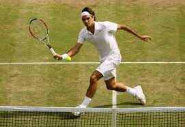

Federar is just a guy. He definitely can't beat any of the fictional characters here. But a talk is if he can beat the rock. The rock is an actor for wrestling and is extremely strong. But, Federer has speed/agility and weapon advantage. So, Federer has a good chance of beating Dwayne but it could go either way
